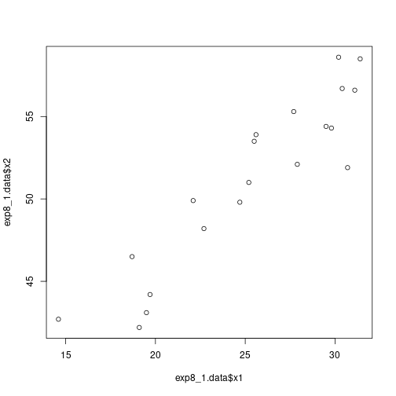

Regression Analysis - SIUe - STAT 482 - Probem Set 8
By Alex Towell (lex@metafunctor.com)
Problem 1
We are interested in modeling the relationship among the predictor variables for the body fat example. Specifically, we wish to model midarm circumference ($w$) as a function of triceps skinfold thickness ($x_1$) and thigh circumference ($x_2$). Refer to the data from Table 7.1. The data for $x_1$ is listed in the first column, $x_2$ is listed in the second column, and $w$ is listed in the third column. We are not interested in the body fat measurements, listed in the fourth column, for this problem.
Part (a)
Compute the correlation matrix for $w$, $x_1$, $x_2$.
# drop the last column of data (original response variable in the experiment)
exp8_1.data = read.csv('TABLE0701.csv')[,1:3]
exp8_1.data.cor = cor(exp8_1.data)
print(exp8_1.data.cor)
## triceps thigh midarm
## triceps 1.0000000 0.9238425 0.4577772
## thigh 0.9238425 1.0000000 0.0846675
## midarm 0.4577772 0.0846675 1.0000000
Part (b)
$$ m_0 : w_i = \beta_0 + \epsilon_i $$$$ m_2 : w_i = \beta_0 + \beta_1 x_{2 i} + \epsilon_i. $$Test for a marginal effect of $x_2$ on $w$ against a model which includes no other input variables. (Compute the test statistic and $p$-value.) Provide an interpretation of the result, stated in the context of the problem.
names(exp8_1.data) = c("x1","x2","w")
m0 = lm(w~1, data=exp8_1.data)
m2 = lm(w~x2, data=exp8_1.data)
print(anova(m0,m2))
## Analysis of Variance Table
##
## Model 1: w ~ 1
## Model 2: w ~ x2
## Res.Df RSS Df Sum of Sq F Pr(>F)
## 1 19 252.73
## 2 18 250.92 1 1.8117 0.13 0.7227
We see that $F_2 = .130$ with $p$-value $.723$.
This is a very large $p$-value, and so $x_2$ (thigh) is not adding much explanatary power compared to the model $m_0$ with no explanatary inputs. In other words, $x_2$ provides very little predictive power of $w$ (midarm).
Interpretation
The observed data is compatible with the reduced (no effects) model $m_0$. It is not necessary to add thigh measurement to the no effects model for predicting midarm measurment.
Part (c)
$$ m_1 : w_i = \beta_0 + \beta_1 x_{i 1} + \epsilon_i $$$$ m_{1 2} : w_i = \beta_0 + \beta_1 x_{i 1} + \beta_1 x_{2 i} + \epsilon_i. $$Test for a partial effect of $x_2$ on $w$ against a model which includes $x_1$. (Compute the test statistic and $p$-value.) Provide an interpretation of the result, stated in the context of the problem.
m1 = lm(w~x1, data=exp8_1.data)
m12 = lm(w~x1+x2, data=exp8_1.data)
print(anova(m1,m12))
## Analysis of Variance Table
##
## Model 1: w ~ x1
## Model 2: w ~ x1 + x2
## Res.Df RSS Df Sum of Sq F Pr(>F)
## 1 18 199.769
## 2 17 2.416 1 197.35 1388.6 < 2.2e-16 ***
## ---
## Signif. codes: 0 '***' 0.001 '**' 0.01 '*' 0.05 '.' 0.1 ' ' 1
Part (d)
Fit the regression model for $w$ which includes both $x_1$ and $x_2$.
summary(m12)
##
## Call:
## lm(formula = w ~ x1 + x2, data = exp8_1.data)
##
## Residuals:
## Min 1Q Median 3Q Max
## -0.58200 -0.30625 0.02592 0.29526 0.56102
##
## Coefficients:
## Estimate Std. Error t value Pr(>|t|)
## (Intercept) 62.33083 1.23934 50.29 <2e-16 ***
## x1 1.88089 0.04498 41.82 <2e-16 ***
## x2 -1.60850 0.04316 -37.26 <2e-16 ***
## ---
## Signif. codes: 0 '***' 0.001 '**' 0.01 '*' 0.05 '.' 0.1 ' ' 1
##
## Residual standard error: 0.377 on 17 degrees of freedom
## Multiple R-squared: 0.9904, Adjusted R-squared: 0.9893
## F-statistic: 880.7 on 2 and 17 DF, p-value: < 2.2e-16
plot(exp8_1.data$x1,exp8_1.data$x2)

Part (e)
What feature of multidimensional modeling is illustrated in this problem?
Answer: Multicollinearity.
Specifically, observe that $x_1$ and $x_2$ are strongly positively correlated, $r_{1 2} = 0.924$, but $x_1$ and $x_2$ have, respectively, a positive and negative partial effect on $w$. The combination of these partial effects and the correlation of $x_1$ and $x_2$ cancels out their partial effects on $w$.
If we look at the scatterplots of $x_1$ versus $w$ and $x_2$ vs $w$, they seem uncorrelated. However, the joint distribution of $x_1$ and $x_2$ are highly explanatory of $w$. Investigating relationships in higher dimensions requires higher level statistical methods, such as regression analysis, rather than two-dimensional methods and graphs.